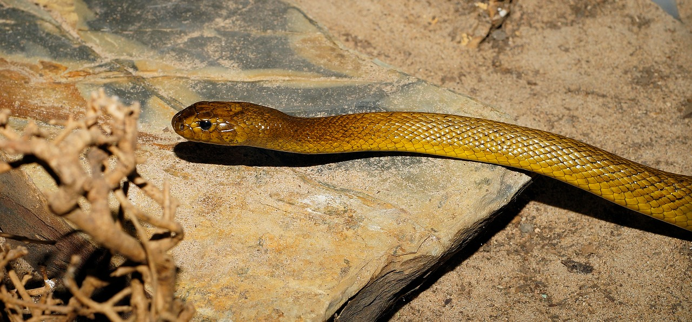

The Inland Taipan is a venomous snake native only to Austrailia. It is commonly referred to as one of the most venemous snakes in the world. The venom released from a single bite is toxic enough to kill at least 100 full grown men. A bite from the Inland Taipan is toxic enough to kill you in as little as 30 minutes if left untreated.
| Comparative Species | Inland Taipan | Coastal Taipan | Egyptian Cobra |
|---|---|---|---|
| Weight | 12 pounds | 14 pounds | 20 pounds |
| Length | 8 feet | 9 feet | 10 feet |
Theses species mentioned above are some of the most highly reverred species in the world. Collectively, these snakes account for hundreds of fatal snakes bites every year. Although they are extremely dangerous, most snakes will avoid humans and only strike if they feel they are in danger.
In terms of sheer toxicity of venom, the top three deadliest snakes in the world are as follows.
To read more about the Inland Taipan, please visit: The Austrailian Museum's Website.